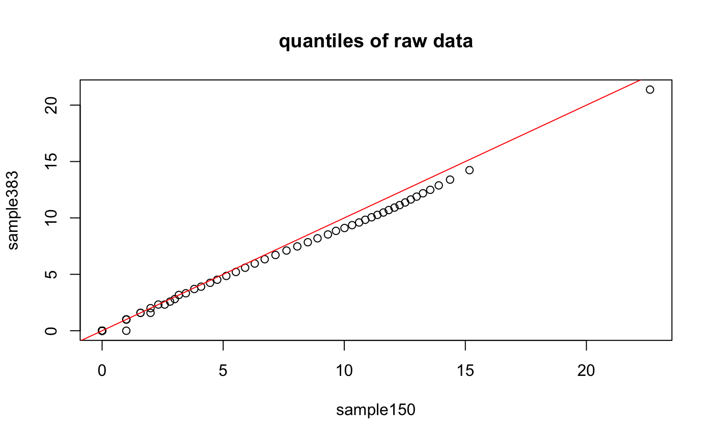
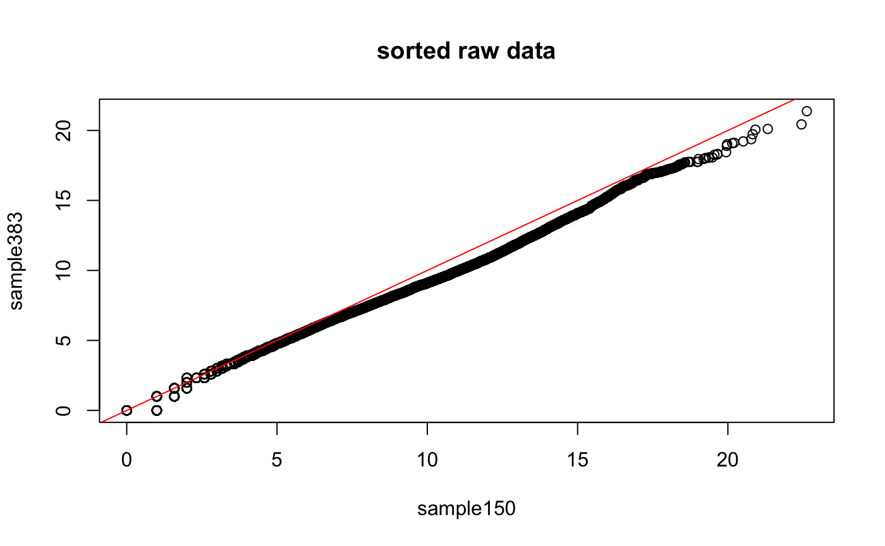
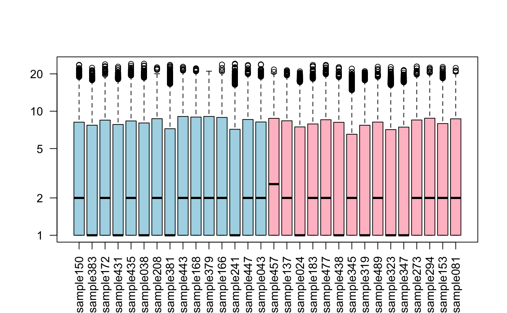
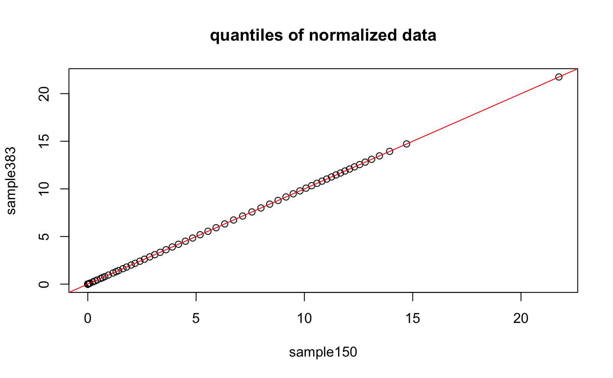
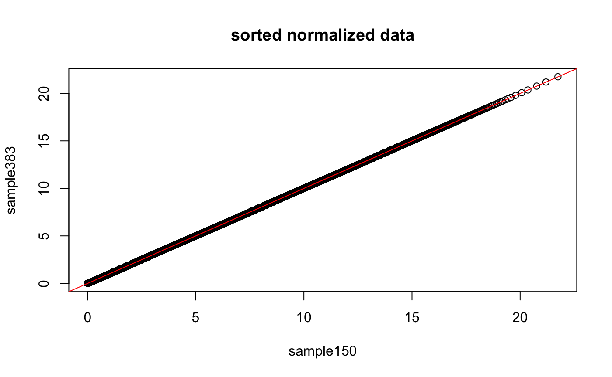
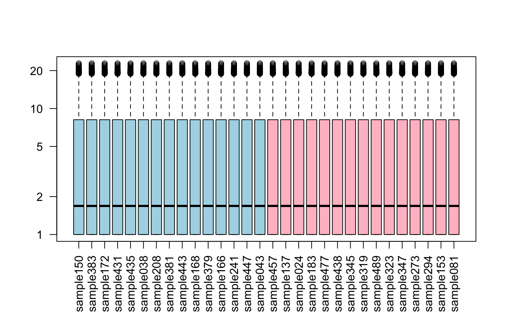

vignettes/docs/quantileNormalization.Rmd
quantileNormalization.RmdHere, we present a simple example of quantile normalization. We will apply it directly to the matrix of gene expression profiles (from RNAseq data). However, notice that in microarrays, this normalization is usually performed at the probe level, before multiple probes are summarized into a single gene/transcript measurement.
We load a “toy” dataset, representing a subset of de-identified samples from the TCGA HNSCC dataset, consisting of 15 adjacent epithelial (AE) and 15 grade-2 (g2) tumor samples. Since these are raw counts, we log2 transform them, to better approximate a normal distribution.
data(HNSC_htseq_raw_counts_toy_AEvsG2)
DAT <- HNSC_htseq_raw_counts_toy_AEvsG2
exprs(DAT) <- log2(exprs(DAT)+1) # +1 to avoid log(0) = -infinity
print(table(DAT$patient.neoplasm_histologic_grade))##
## AE g2
## 15 15Here we show how the quantiles of two samples’ distributions compare to each other. As you can see, while close, there are differences between the two.
probs <- seq(0,1,.01)
plot(quantile(exprs(DAT)[,1],probs=probs),quantile(exprs(DAT)[,2],probs=probs),
xlab=sampleNames(DAT)[1],ylab=sampleNames(DAT)[2],main="quantiles of raw data")
abline(0,1,col="red")
plot(sort(exprs(DAT)[,1]),sort(exprs(DAT)[,2]),
xlab=sampleNames(DAT)[1],ylab=sampleNames(DAT)[2],main="sorted raw data")
abline(0,1,col="red")
## let's boxplot each sample's distribution (similar but not identical)
boxplot(exprs(DAT)+1,col=c("lightblue","pink")[as.factor(DAT$patient.neoplasm_histologic_grade)],las=2,log="y")
Below, we show operationally how to carry out quantile normalization using ranking and sorting.
## save the original ranking (within each column)
rnk <- apply(exprs(DAT),2,rank,ties.method="first")
## notice that
## X == sort(X)[rank(X,ties='first')]
## this equivalence will be used below
## sort each column from smallest to largest
srt <- apply(exprs(DAT),2,sort)
## compute row means ..
MN <- rowMeans(srt)
## replace each row entry in the expression matrix with the mean of that row
## .. and reorder according to original ranking
NRM <- DAT
exprs(NRM)[,] <- apply(rnk,2,function(z) MN[z]) # use of [,] preserves row and column namesLet us now see how the quantiles of the normalized data, as well as their boxplots, look like.
## now, let us compare quantiles of two samples again
plot(quantile(exprs(NRM)[,1],probs=probs),quantile(exprs(NRM)[,2],probs=probs),
xlab=sampleNames(DAT)[1],ylab=sampleNames(DAT)[2],main="quantiles of normalized data")
abline(0,1,col="red")
## by construction, the following two sorted vectors should be identical
plot(sort(exprs(NRM)[,1]),sort(exprs(NRM)[,2]),
xlab=sampleNames(DAT)[1],ylab=sampleNames(DAT)[2],main="sorted normalized data")
abline(0,1,col="red")
## let's boxplot each sample's distribution (identical)
boxplot(exprs(NRM)+1,
col=c("lightblue","pink")[as.factor(NRM$patient.neoplasm_histologic_grade)],las=2,log="y")